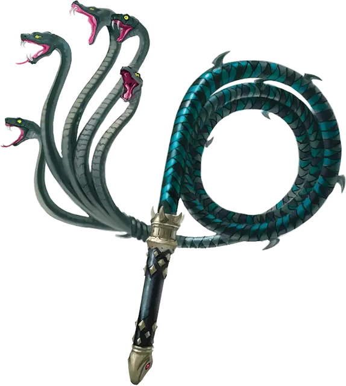

Плеть теней
Lash of Shadows
Оружие (кнут), артефакт (требуется настройка)

Этот кнут из змеиной кожи, тронутый силой Зехира, оканчивается пятью ожившими змеиными головами.
Разум. Плеть теней - это разумное оружие хаотично злого мировоззрения c Интеллектом 18, Мудростью 16 и Харизмой 20. Оно обладает нормальным слухом и тёмным зрением на расстоянии 120 футов. Оружие телепатически общается со своим владельцем и может говорить, читать и понимать Общий, Драконий и язык Бездны.
Индивидуальность. Безумная марилит [marilith] по имени Сайзлифет живет в плети теней. Оружие имеет вспыльчивый характер и испытывает только сильные эмоции. Оно наиболее счастливо, когда причиняет вред.
Дремлющий. В дремлющем состоянии кнут даёт следующие преимущества:
- Вы можете говорить, читать и писать на Драконьем и языке Бездны.
- Вы получаете бонус +1 к броскам атаки и урона, совершаемым с помощью этого магического оружия.
- Вы можете отравить любое существо, по которому попадет атака данным кнутом. Существо должно преуспеть в спасброске Телосложения Сл 13 или пострадать от действия одного из нижеописанных ядов по вашему выбору; как только яд, отличный от «Змеиного яда», был использован, он не может быть использован снова до следующего рассвета:
- Мертвые глаза. Существо, которое проваливает спасбросок против этого яда, становится отравленным на 1 час. Будучи отравленным таким образом, существо ослеплено.
- Змеиный яд. Существо, которое проваливает спасбросок против этого яда, получает 3к6 урона ядом или вдвое меньше урона при успехе.
Пробуждённый. Когда кнут достигает пробуждённого состояния, он приобретает следующие свойства:
- Бонус к броскам атаки и урона увеличивается до +2.
- Сл спасброска против ядов оружия увеличивается до 15.
- Оружие получает новый вариант яда, именуемый «Кровь упыря». Существо, которое проваливает спасбросок против этого яда, становится отравленным на 1 минуту. Будучи отравленным таким образом, существо парализовано. Существо может повторять спасбросок в конце каждого своего хода, оканчивая на себе эффект при успехе.
Возвышенный. Когда кнут достигает возвышенного состояния, он приобретает следующие дополнительные свойства:
- Бонус к броскам атаки и урона увеличивается до +3.
- Сл спасброска против ядов оружия увеличивается до 17.
- Оружие получает новый вариант яда под названием «Слезы василиска». Существо, которое проваливает спасбросок против этого яда, начинает превращаться в камень и считается опутанным. Существо должно повторить спасбросок в конце своего следующего хода. При успехе эффект заканчивается. При провале существо становится окаменевшим на 24 часа.
Свойства артефакта Предателя
Оружие Предателей набирает силу точно так же, как и Отголоски Дивергенции. В Дремлющем состоянии каждый из этих артефактов обладает одним малым положительным свойством и одним малым отрицательным свойством. Когда артефакт достигает Пробуждённого состояния, он приобретает дополнительное малое положительное свойство и малое отрицательное свойство. Когда предмет достигает своего Возвышенного состояния, он приобретает основное положительное свойство.